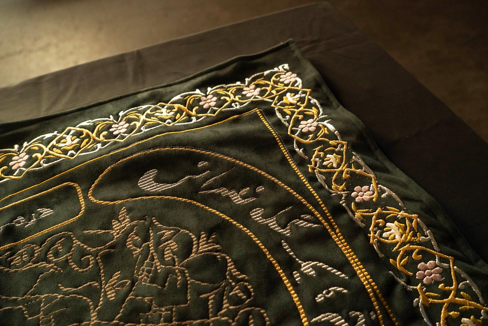
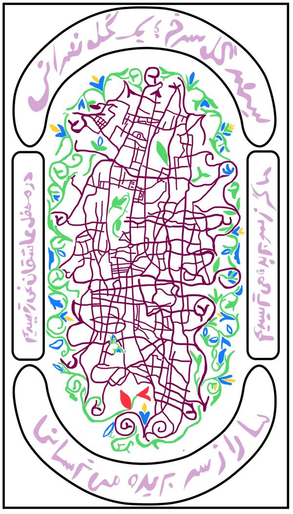

Threads
Close ×
Electronic Textiles

Digital Embroidery Design
Threads is an electronic textile installation developed in the visual language of Shia devotional banners, drawing on materials, ornamental styles, and compositional conventions traditionally used to honor kings and the Imams within Shia Islam. These textiles historically function as carriers of declared belief, loyalty, and collective identification. Rather than devotional text, Threads incorporates the words of a widely known love poem that has gained political force through its circulation in Iran’s uprisings in the past decade.
At the center of the work, embroidered map-like forms connect multiple embedded electronic systems. These systems communicate wirelessly through decentralized, peer-to-peer protocols. Touch activates encrypted signals that are translated into a breathing like vibration on the tapestry.
Threads uses touch and encryption to approach communication as resistant to textual legibility, circulating instead through sensation — operating outside systems of visibility and surveillance.